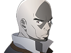
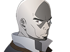

Kirito (Kazuto Kirigaya)
Kirito is the protagonist of Sword Art Online. He is a "solo" player, a player who hasn't joined a guild and usually works alone. He is also one of the very few people to have had the privilege to play in the beta testing period of Sword Art Online. His game alias, Kirito, is created by taking the syllables of the first and last Kanji of his real last and first names respectively: (Kirigaya Kazuto). In the real world, he lives with his aunt and younger cousin in a family of 3.
Asuna (Asuna Yuuki)
Asuna is a friend of Kirito and is a sub-leader of the guild Knights of the Blood (KoB), a medium-sized guild of about thirty players, also called the strongest guild in Aincrad. Being one of the few girls that are in SAO, and even more so that she's extremely pretty, she receives many invitations and proposals. She is a skilled player earning the title "Flash" for her extraordinary sword skill that is lightning fast. Her game alias is the same as her real world name.
Yui
A young and cheerful girl with long black hair who looks no older than 10 years old. Kirito and Asuna found her in a forest in the 22nd floor of Aincrad. After taking care of her, she appears to have lost her memory. She calls Kirito and Asuna "Papa" and "Mama" due to having trouble pronouncing their names which is a side effect of the memory loss. They decided that they would go and search for her friends in the Starting City.
Leafa (Suguha Kirigaya)
Suguha is Kazuto's adoptive sister in the real world, although later revealed to be his cousin. She is an accomplished kendo practitioner, having practiced for 8 years, following her grandfather's wishes. In ALO her avatar name is Leafa. Suguha originally disliked VRMMO games for it hid peoples' nature and reality, as it did with Kazuto. She took up ALO in order to understand Kazuto better when he was trapped in SAO. She won the Sylph tournament, earning the title as the strongest Sylph before the events of the Fairy Dance Arc.
Silica (Keiko Ayano)
She is one of the very rare "Beast Tamers" in SAO. She has a very rare familiar a "feathery dragon" that she named Pina after her cat in the real world. She treasured Pina a lot and was the reason she survived in the game. Aside from being a female player, she is also a Beast Tamer and thus perceived as an idol amongst the middle level players. She received endless invitations from parties and guilds who wanted an idol player to join them to get more fame.
Lisbeth (Rika Shinozaki)
A mace wielder that runs a blacksmith shop in Aincrad on the 48th floor. She made Asuna's rapier "Lament Light" and one day got a request from Kirito to make him a sword with similar or better quality than his one handed long sword "Elucidator" that he got from a monster drop. She told him that if she had the right materials she could make weapons that would break any sword, so they formed a party and went on a journey to find the material she needed. Because of that journey she came to the conclusion that she felt lonely and yearned for warmth.
Klein (Ryotaro Tsuboi)
A friendly player that meets Kirito at the start of the game and quickly befriends and learns from him. He and Kirito later separate because he has friends who were also new to the game so he couldn't leave them. He survives for the past two years and managed to protect his friends the whole time, something Kirito regretted not doing. He is a katana user and the leader of the small guild Fuurinkazan who participates in the boss battles.
Agil (Andrew Gilbert Mills)
A merchant stationed at city Algate, located at the 50th floor of Aincrad. His shop motto is "Buy cheap and sell cheap." He is 180cm tall, has dark complexion and has a rare hairstyle which is bald. He is also a very strong axe-wielding warrior in the frontlines. Kirito sometimes stays in his shop as sort of a disaster shelter, which he gets annoyed with but later ignores as Asuna also visits, which results in some publicity for his shop.
Akihiko Kayaba
Akihiko Kayaba is the Director and Creator of the Nerve Gear and Sword Art Online. He traps all the players within Sword Art Online by using the Nerve Gear to cease sending signals to the users' body. Any attempt at removal, loss of power for a certain period, or if the user dies in the game will also kill the user. His motivation is to observe what happens after he traps them.
Plot
In 2022, a Virtual Reality Massively Multiplayer Online Role-Playing Game (VRMMORPG) called Sword Art Online (SAO) is released. With the NerveGear, a helmet that stimulates the user's five senses via their brain, players can experience and control their in-game characters with their minds. Both the game and the NerveGear was created by Akihiko Kayaba.
On November 6, 10,000 players log into the SAO's mainframe cyberspace for the first time, only to discover that they are unable to log out. Kayaba appears and tells the players that they must beat all 100 floors of Aincrad, a steel castle which is the setting of SAO, if they wish to be free. Those who suffer in-game deaths or forcibly remove the NerveGear out-of-game will suffer real-life deaths.
One of the players named Kazuto "Kirito" Kirigaya is one of 1,000 testers in the game's previous closed beta. With the advantage of previous VR gaming experience and a drive to protect other beta testers from discrimination, he isolates himself from the greater group and plays the game alone, bearing the mantle of "beater", a "beta tester" and "cheater". As the players progress through the game Kirito eventually befriends a young girl named Asuna Yūki, forming a relationship with and later marrying her in-game. After the duo discover the identity of Kayaba's secret ID, who was playing as the leader of the guild Asuna joined in, they confront and destroy him, freeing themselves and the other players from the game.